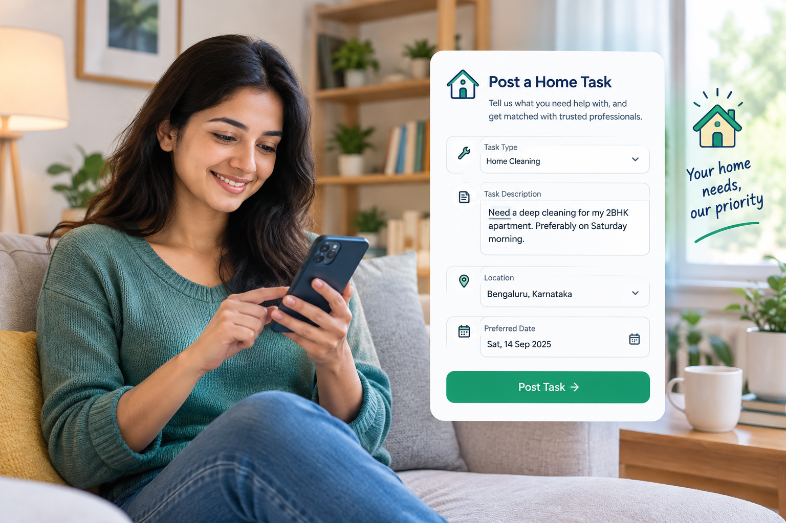
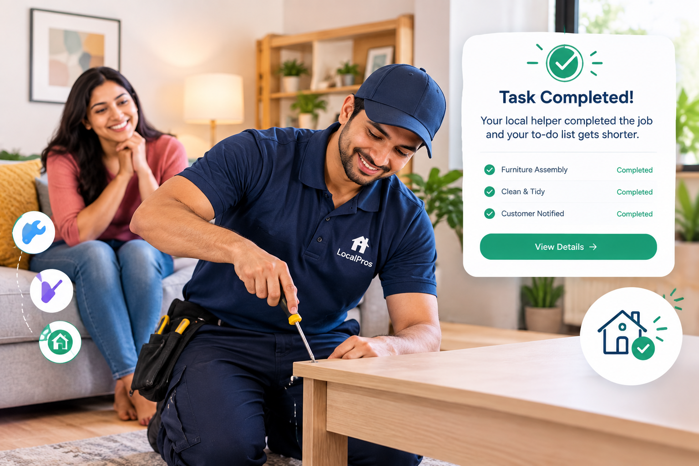
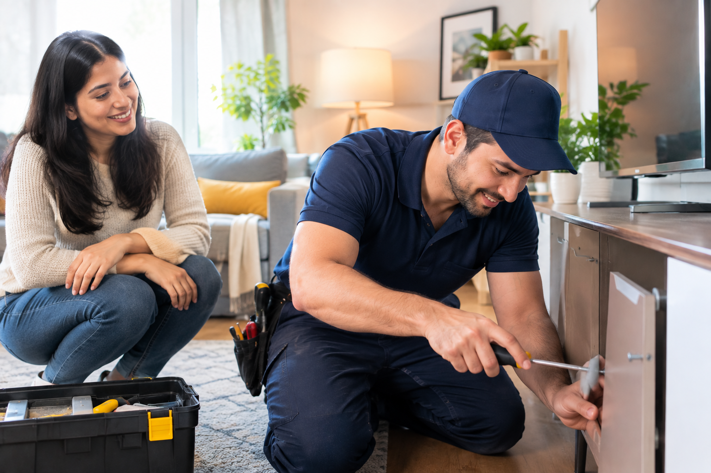

01
START HERE
Post your task
Describe what you need help with, when you need it and where.
Find skilled local people for repairs, maintenance and everyday tasks around your home.
Post a Task
Get everyday home repairs handled by local help.

Refresh your walls and spaces with local professionals.

Keep your home fresh with reliable local help.

Get furniture assembled and ready to use.

Keep outdoor spaces clean and well maintained.
Getting help with everyday tasks is simple. Post your task, connect with someone nearby, and get it done.

01Describe what you need help with, when you need it and where.
Explore people nearby who have the skills your task requires.
 03
03
Discuss the task, timing and details directly before getting started.

04Your local helper completes the job and your to-do list gets shorter.


TaskLocal makes everyday home tasks easier by bringing customers and capable local people together in one simple marketplace.
Find help from people available in your local area.
Share exactly what you need before getting started.
Connect directly and arrange the task your way.
Whether it is a quick repair, a home project or something you simply do not have time for, TaskLocal helps you find practical local support.
Discover people available to help in your area.
Share the job details before you connect.
Discuss timing and requirements directly.

Everyday jobs are easier when good local help is within reach.
From quick fixes to everyday home projects, find local help for the tasks that need an extra hand.
Describe what needs to be done and give local professionals the details they need to understand your task before connecting with you.
A simpler way to get everyday tasks handled by people and professionals in your local community.
Find people and professionals who can help within your local area.
Nearby connectionsDiscuss the task, timing and details directly before getting started.
Clear communicationPost everyday jobs without complicated processes or unnecessary steps.
Less hassleConnect through a community designed around useful local relationships.
Community first
HOME REPAIR

Find practical help for those small repairs that keep getting pushed down your list.
ASSEMBLY

Get an extra pair of hands when furniture, moving or setup becomes too much to handle alone.
 LOCAL WORK
LOCAL WORK

Turn useful skills into local opportunities by helping people with tasks around you.
Post what you need done, connect with local help, and take the next step without making things complicated.